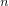
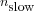
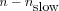

The ILDM (Deuflhard) method utilizes the algorithm developed by Deuflhard and Heroth (see [
Deuflhard96,
Zobeley05,
Surovtsova09] for details).
Basic concept of decomposition into "slow" and "fast" modes
The block slow — fast decomposition of the Jacobian is performed in two steps:
- First a real Schur decomposition yields a block upper triangular matrix.
- In a second step the desired decoupled structure of the transformed Jacobian is obtained by solving a Sylvester equation.
This basis procedure results in a transformation of state vectors in new modes, which are then separated in slow and fast modes. Accordingly, the system dynamics of a full reaction system comprising  ODEs is reduced to a DAE system consisting of  ordinary differential equations and  algebraic equations. The number of slow variables is calculated iteratively using the tolerance criterion of Deuflhard and Heroth. The method implemented in COPASI has an additional focus on the reduction of the underlying biochemical network and not only on the reduction of the mathematical equations. For this purpose COPASI performs the analysis of transformation matrices derived after solving the Sylvester equation.
The implementation in COPASI
The Jacobian is calculated by using finite differences. The Schur transformation and the solution of Sylvester equation are performed using CLAPACK. Results in COPASI are displayed in four matrices and four vectors. The matrix "Species" provides the contribution of each metabolite to every mode, whereas the table "Modes" summarizes the mode distribution for each metabolite. Vector "Slow space" ("Fast space" respectively) displays the contribution of each concentration variable to the set of all slow (fast) modes. The matrices "Reactions contributions to modes" and "Reactions distribution between modes" are the product of stoichiometric matrix and transformation matrix normed by column and row respectively. Two vectors "Reactions slow space" and "Reactions fast space" provide the contribution of each reaction to the slow and fast spaces. The metabolites with largest contribution to the fast space could be supposed to be "fast" and thus, its ordinary differential equation is replaced by the corresponding algebraic equation (i.e. with the same right-hand side). In the specific case that a subset of species does not contribute to the slow space (but contributes only to the fast space), the time-scale decomposition results in a dissection of the reaction network. The reactions dominating in the fast modes are fast reactions.